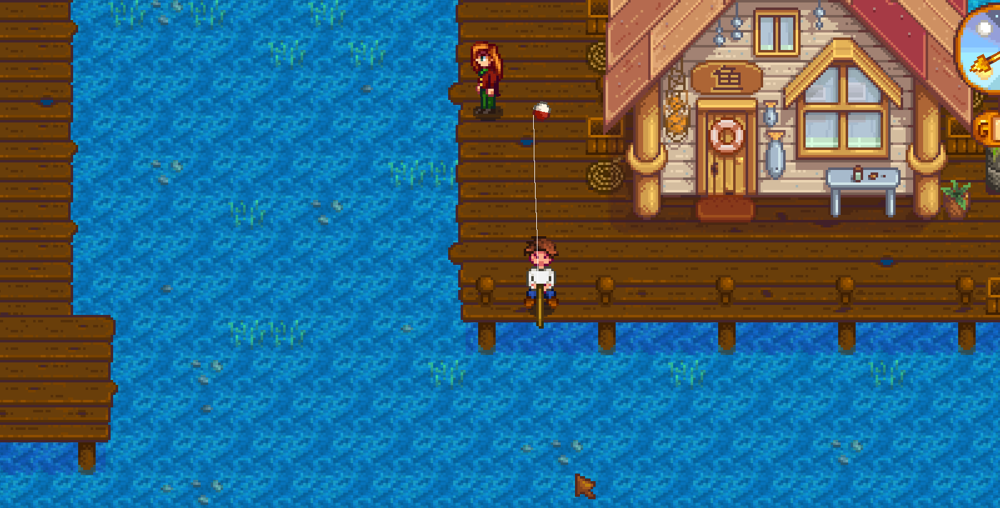
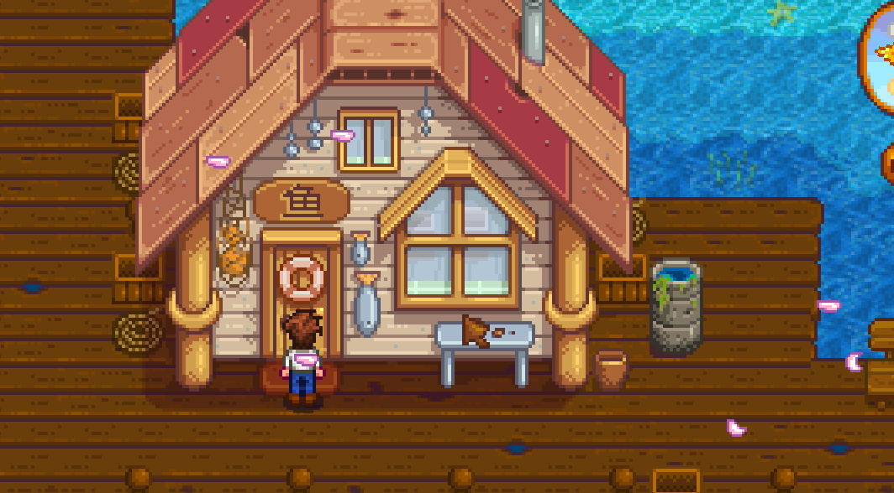

Quick answers (read this first)
- Face water → hold left-click to cast → release. Wait for ! → click once (on the water, not your character).
- Minigame: hold left-click to raise the green bar, release to drop it. Keep the bar on the fish.
- Do not spam-click. Smooth hold/release wins more than panic tapping.
- Practice on the farm pond or mountain lake before ocean difficulty.
- Pack food. Fishing drains energy—stop before Exhausted.
Who this is for (and who should skip)
Use this if casts keep failing, you click the character instead of the bite, or the green bar feels impossible. This page is written from a real Year 1 save where the first week felt like the bobber was mocking us on purpose.
Skip or skim if you already legend-fish for fun. This is bamboo-rod Year 1 survival—not a min-max spreadsheet for iridium tackle and treasure chest routes.
Version note (Stardew Valley 1.6): We teach controls and habits—not invented bite rates or fake catch percentages. Confirm shop prices at Willy’s in-game.
From our Year 1 save (real pitfalls): When the ! appeared, we clicked the farmer instead of the water and reeled in empty. Click the bobber / water once. Farm pond practice beat the ocean on day one for us.
Pros & cons of early fishing
| Details | |
|---|---|
| Pros | Rainy-day income; skill unlocks; Community Center fish options later; calm optional loop. |
| Cons | Frustrating at level 0; energy hungry; easy to faint on the beach. |
| Use when | Chores done, food packed, bar at least half full. |
| Skip when | Exhausted, angry, or you still need to water crops. |
Personal tips from our Year 1 save
On our first rainy Spring day, we ignored the ocean and stood at the farm pond until landing a sunfish felt boring. Rain waters crops for free, so rainy afternoons are the safest time to burn energy on fishing without stealing time from the patch.
We put the rod on the toolbar next to food—switching to a snack mid-session beat opening inventory on Willy’s dock. One more cast at zero energy cost us a clinic trip once. Screenshot the pier when you visit even if you are not buying yet; later rod-upgrade runs feel less confusing when the dock is already familiar.
Interactive checklist
Tick as you play. Session-only checkboxes—refresh clears them.
Safe to skip (anti-FOMO)
- Ocean fishing on day 1 with zero practice.
- Buying expensive tackle before you can land easy pond fish.
- “One more cast” at 0 energy.
- Restarting the farm because fishing feels hard—everyone whiffs early.
- Watching a two-hour “perfect fishing day” video and comparing your clumsy first week to it.
Decision table: where to fish
| Spot | Choose when… | Wait when… |
|---|---|---|
| Farm pond | Learning cast + bar | You already land fish easily |
| Mountain lake | Short rainy trips near mines | You are already Exhausted from mining |
| Ocean / Willy’s dock | You want beach screenshots + harder practice | Energy is low and no food |
Comparison table: fishing session length
| Session type | Good for | Stop when |
|---|---|---|
| Five-cast warm-up | Learning controls after chores | You miss two bites in a row—take a break |
| Rainy afternoon | Skill XP while crops water themselves | Energy hits the yellow zone |
| Beach tourist trip | Meeting Willy, photos, one practice cast | You feel tilted by the minigame |
| Bundle prep (later) | Specific fish for Community Center | You are guessing fish names—check the bundle first |
Real screenshots from our Year 1 save

Game screenshot © ConcernedApe — used for guide commentary

Game screenshot © ConcernedApe — used for guide commentary

Game screenshot © ConcernedApe — used for guide commentary

Game screenshot © ConcernedApe — used for guide commentary
How to land a fish (operations)
Follow these eight steps in order. Speed comes later; rhythm comes first.
- Finish farm chores first—water crops, check animals, then decide if energy remains.
- Stand facing water with the rod selected on your toolbar.
- Hold left-click to charge; release to cast. Aim for water, not grass.
- Wait patiently. Do not click randomly. Failed casts happen—recast calmly.
- When ! flashes, click once on the water—not your character.
- Hold to raise the green bar; release to drop it. Track the fish icon.
- Keep the fish inside the bar until the catch meter fills.
- Stop while you can still walk home. Eat if the bar dips, then sleep.
Common mistakes
- Clicking the farmer on the bite. That reels in empty every time. The click target is the water where the bobber sits, not your hat.
- Spam-clicking the minigame. Rapid clicks make the green bar bounce wildly. Hold and release in smooth pulses instead—the bar responds more predictably.
- Casting with no energy plan. Fishing costs stamina per cast and per fight. Beach naps and clinic bills hurt more than skipping a session.
- Skipping chores to “grind fishing.” Dead crops and unhappy animals cost more than missed fishing XP. Rainy days exist partly so you can do both.
- Assuming failure means you are bad at the game. Level 0 fishing is supposed to feel clumsy. Every veteran whiffed sunfish in Spring Year 1.
Alternative variations
- Rain-only fisher: Cast only when rain waters crops for you. Zero guilt about ignoring the rod on sunny days.
- Screenshot tourist: Walk to the dock, take photos like ours above, throw one practice cast, and leave. No grind required.
- Skill later: Ignore fishing entirely until backpack upgrades and daily watering feel automatic—then revisit with more energy headroom.
FAQ
Why doesn’t the ! appear?
The bobber must land in fishable water and sit there patiently. Some casts simply miss or time out—recast without assuming the game is broken. Standing too far from the edge or casting onto land produces an empty reel, not a bite.
Is fishing required in Year 1?
No. Fishing helps with rainy-day income, skill unlocks, and Community Center bundles later, but a farm-first save that barely touches the rod is completely valid.
Should I buy a better rod immediately?
Not until basic casts and bites feel routine. Willy sells upgrades when you are ready, but skill and practice matter more than panic shopping on day three.
Why does the green bar feel impossible on controller?
Controller triggers use the same hold/release logic as mouse clicks. Try shorter holds and accept that early fish fight back harder at low skill. Accessibility options in 1.6 may also help—check settings if the minigame causes strain.
Can I fish at night?
Yes, if you have energy and time before 2 AM. We prefer daytime sessions in Year 1 so passing out on the beach is less likely—but night fishing is not forbidden, just riskier for beginners.
Next steps / related pages
Unofficial fan guide. Not affiliated with ConcernedApe.